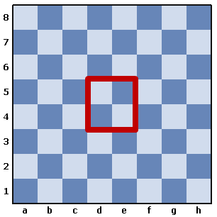

ЦЕЛЬ ИГРЫ. ШАХМАТНАЯ ДОСКА И ФИГУРЫ
Название игры «шахматы» произошло от сочетания персидского
слова «шах» (король) и арабского
слова «мат» (умер). Дословный перевод названия «шахматы» звучит
как «Смерть королю противника».
Этим названием и определяется
цель игры.
Она состоит в том, чтобы
привести неприятельского короля
к гибели – дать ему мат. В
связи с
этим действия каждого соперника
направлены к тому, чтобы защищать
своего короля и атаковать короля
противника. Но не всегда партия заканчивается матом. В ряде случаев
соперник, понеся потери, не дожидаясь мата, сдает партию – признает
себя побежденным. Другим исходом
партии может быть ничья: когда ни
один из соперников не может дать
мата другому.
Игра от начала до конца встречи носит название шахматной партии, или просто партии. В шахматы обычно играют два соперника, или как принято называть, два партнера. Один партнер руководит армией белых фигур, а другой армией черных. Но встечаются и другие виды шахматных соревнований. в которых число участнков игры бывает больше двух. Это игра называется "по консультации" - "Консультативные партии", когда против одного сильного соперника выступают несколько играков (два и более). Весьме распространенным видом шахматных соренований являются сеансы одновременной игры на 20-30 и более досках. В этом случае сильный шахматист - гроссмейстер, мастер, кандидат в мастера - играет ондвременно с 20-30 и более соперниками.
Самуэль Герман Решевский (урожденный Шмуль Жешевский; 26 ноября 1911 – 4 апреля 1992) - польский шахматный вундеркинд, а затем ведущий американский шахматный гроссмейстер. Он был претендентом на чемпионат мира по шахматам с середины 1930-х до середины 1960-х годов: он занял третье место в турнире чемпионата мира по шахматам 1948 года и второе место в турнире кандидатов 1953 года.
Шахматное поле
Полем битвы в шахматах является шахмат ная доска. Она представляет собой квадрат, каждая сторона которого состоит из 8 клеток. Из этого следует, что вся доска разделена на 64 клетки, которые в шахматах называются поля ми (иногда шахматисты называют их пунктами).
Границы полей попеременно окрашены
в светлый и темный цвета. Первые называют белыми, а вторые — черными.
При игре шахматная доска должна быть расположена так, как указано на рисунке 1, то
есть
нижнее угловое поле, находящееся с правой стороны игрока, должно быть белое.
Следует отметить, что на всех приведенных
шахматных диаграммах белые фигуры всегда расположены внизу, а черные — наверху.
Как известно, белые и черные фигуры находятся на противоположных сторонах доски. В составе каждой армии имеются король, ферзь, две ладьи, два слона, два коня и восемь пешек. Об их расположении на шахматном поле, а также о присущих им боевых качествах речь пойдет ниже.
Обозначения полей
Для записи партий и ходов фигур существует так называемая шахматная нотация. Начинающему шахматисту прежде всего необходимо обозначить все поля шахматной доски. Для этого через все 8 клеток, идущих от одного игрока к другому, надо провести линии, которые в шахматах обозначаются буквами латинского алфавита: a, b, c, d, e, f, g, h.
Из этого следует, что крайняя левая линия от играющего белыми фигурами, а также крайняя правая от играющего черными фигурами будет обозначаться как линия «а». Соответственно, следующая будет линией «b» и т. д. Эти линии называют вертикалями.
К вертикалям проводят перпендикулярно 8 параллельных линий, которые называются горизонталями, или рядами. Эти линии нумеруют цифрами от 1 до 8.
Так же, как и в случаях с вертикалями, ближайшим к играющему белыми фигурами будет ряд 1, затем — ряд 2 и т. д. А вот к играющему черными фигурами ближайшим будет ряд 8, затем — 7 и т. д.
Необходимо запомнить, что каждое поле доски обозначается буквой по вертикали и цифрой горизонтали. Например, угловые поля у играющего белыми фигурами обозначаются а1 и h1. Помимо вертикалей и горизонталей, через поля одинакового цвета можно провести косые линии — диагонали. Их обозначают сокращенно: например, а3—f8 (диагональ а3—b4—c5— d6—e7—f8).

Часть доски, занятая вертикалями а, b, c, называется ферзевым флангом,
а вертикалями
f,
g,
h — королевским флангом. Поля d4, e4, d5 и e5
образуют центр.
Выбор цвета фигур определяется жребием между играющими перед началом соревнований. Следующие партии партнеры играют белыми и черными поочередно. В соревнова- ниях очередь игры и цвет фигур со- перников определяются специальны- ми турнирными таблицами. Проведем воображаемую линию между четвертой и пятой горизонта- лями — это демаркационная линия, разделяющая доску на две равные части: лагерь белых и лагерь черных. Если же провести вертикальную ли- нию по середине доски, то снова она поделится на две равные части. Та часть, где остались ферзи, называ- ется ферзевым флангом, противопо- ложная — королевским. Часто шахма- тисты говорят, например, так: «Я вел атаку на королевском фланге, а мой соперник контратаковал на ферзе- вом».